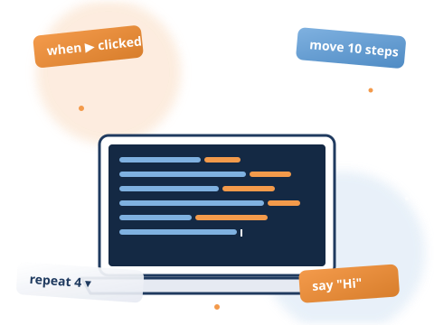

7〜17歳のための、子どものためのプログラミング道場。
Scratch も、micro:bit も、Webサイトも、Pythonも。あなたのつくりたいを応援します。

参加申込は Doorkeeper から。事前申込制・無料です。
「教えこむ」のではなく、子どもが自分で進める道場です。
つくりたいものをまず決めてから、メンターと一緒に進めます。決まったカリキュラムはありません。
大人のメンターは「教える人」ではなく、一緒に考え、つまずいたら少しヒントを出す相談相手です。
参加は無料。継続参加でも、まずは1回だけのお試しでも OK。Doorkeeper から申し込めます。
道場で取り組まれることが多いテーマの例です。「他のことをやりたい！」も歓迎です。